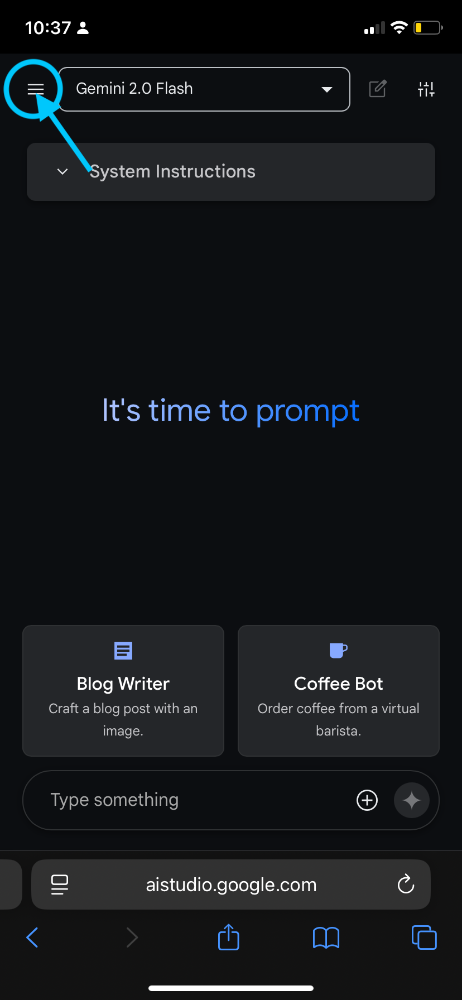
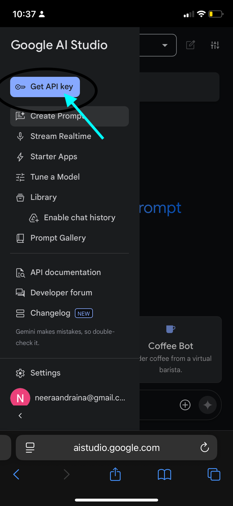
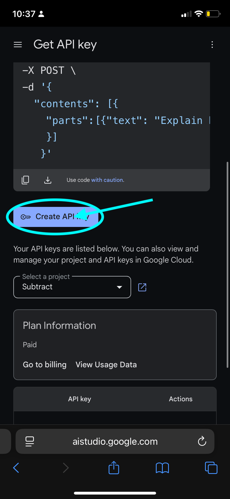

How to Install Taurus AI
Follow these simple steps to install Taurus AI on your system:
Download Taurus AI
Download S-GPT Encoder
Download Taurus Encoder
Step 1: Install Taurus AI
To install Taurus AI, you need to click Download Taurus AI. Once the Download has finished, you will see a screen asking you to enter an API Key. Go to this link:
Key Generator Then follow the photos below



Step 2: Copy your API Key
Click Copy API Key. Once you have copied the key, you can open the shortcut and paste it back in.
Step 3: Finish Up
Install the S-GPT Encoder & Taurus Encoder shortcuts. After
that, you should be good to go! (The Taurus Encoder shortcut may ask you
for a NTFY server url, we will cover that in a later release)
Step 4: Run Taurus AI
From here, you have some options. You can either run it as a shortcut, or ask Siri.
Shortcut:
Open the shortcuts app, and you should see Taurus AI. Tap it, and it should run.
Siri:
Ask Siri "Siri, Taurus".
Now you're ready to use Taurus AI!
Please report all issues with Taurus here:x